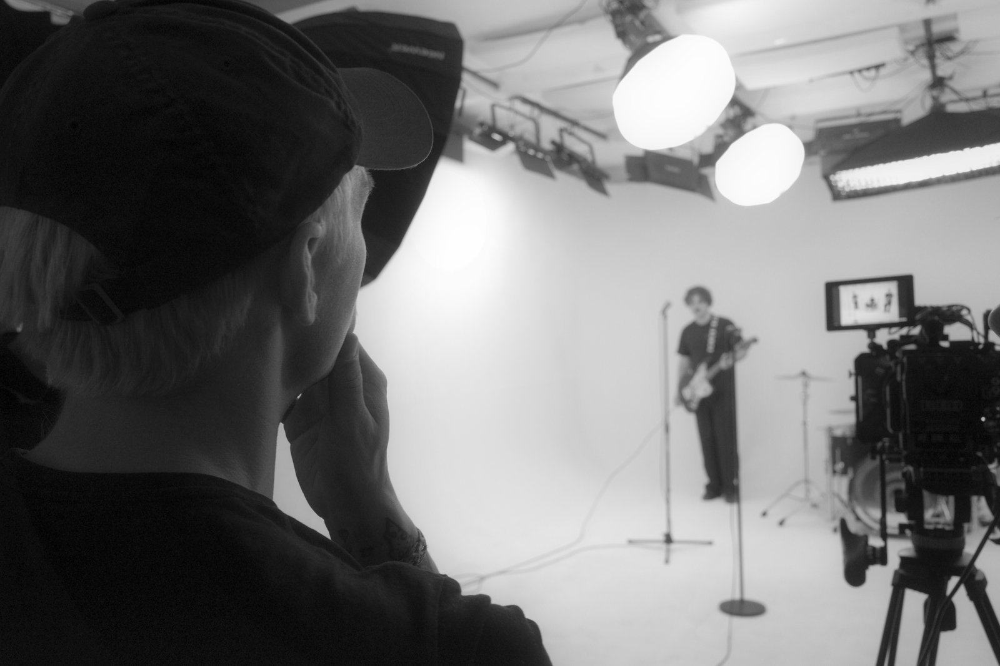
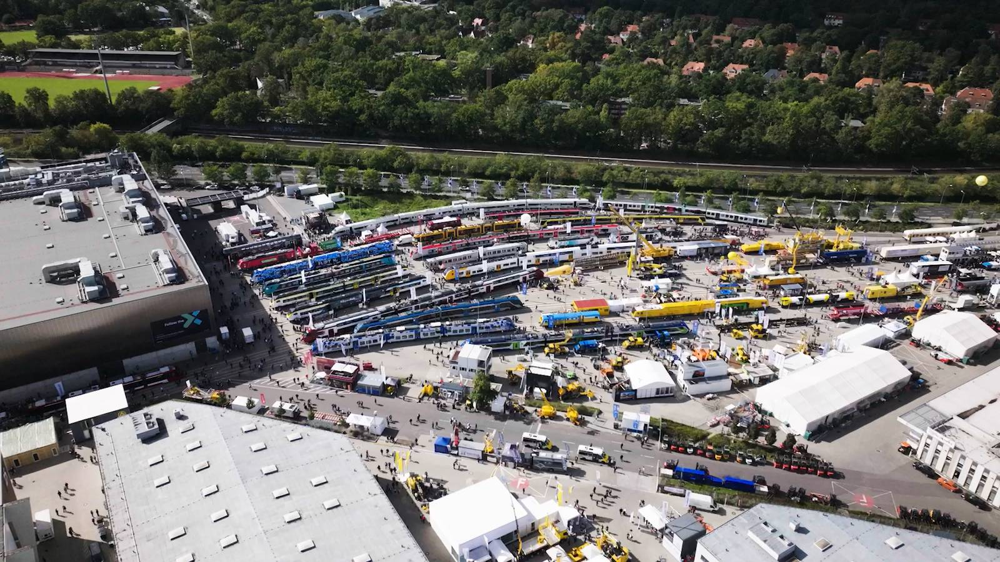
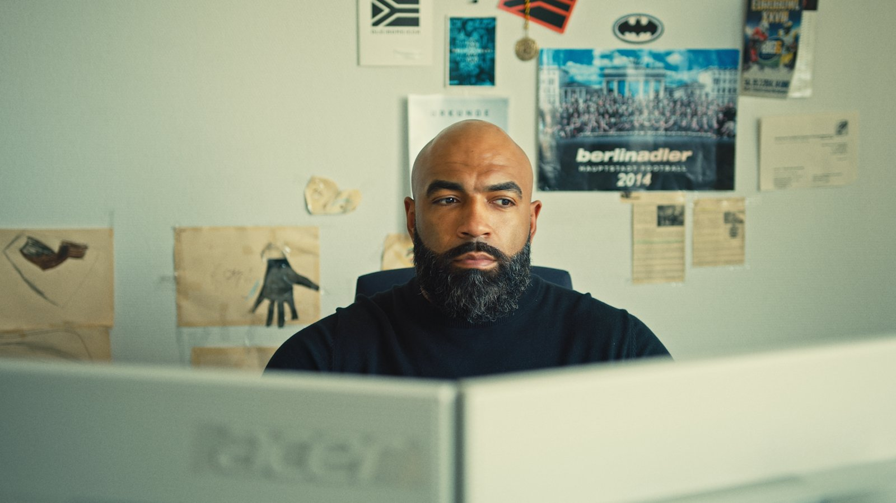
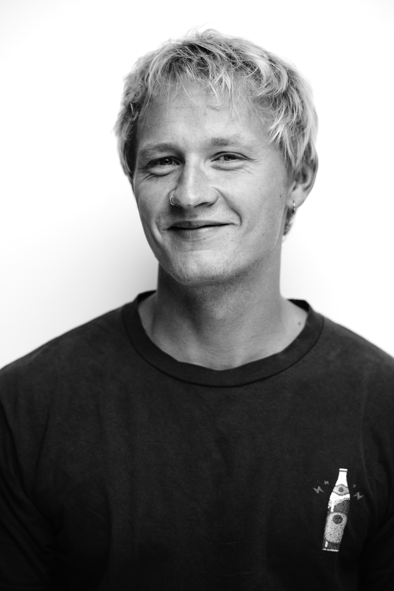

Perfektionismus trifft
kreativen Wahnsinn.
Ich erzähle Geschichten in Licht und Bewegung — von intimen Portraits bis hin zu großen Multicam-Filmproduktionen.
Work
Eine Auswahl aus Foto- und Filmprojekten der letzten Jahre — Portrait, Reportage, Landschaft und Bewegtbild.



Über mich

Director of Photography
& Colorist.
Ich bin Philip Neugebauer, 30 Jahre alt, Director of Photography und Colorist aus Berlin. Seit über 13 Jahren begleite ich Produktionen von der ersten Idee bis zum finalen Frame — für Marken wie Porsche, Warner Music, Sony Classical und UEFA.
Von Kiel bis Hawaii, von Sansibar bis Palo Alto — ich gehe dahin, wo das Bild entsteht.
Was mich antreibt? Das Bild, das bleibt. Privat verbringe ich zu viel Zeit damit, Kameralinsen zu vergleichen, Filmemacher-Kommentare auf Blu-ray zu hören und Farbpaletten aus alten Kinoklassikern zu analysieren — kurz: ein echter Film- und Techniknerd. Genau das fließt in jede Produktion ein.
Mein Vorteil: Ich denke schon beim Dreh in der Post.
Was ich biete
Von der ersten Bildidee bis zum finalen Grading — Gestaltung, Umsetzung und Beratung aus einer Hand.
Director of Photography
Bildgestaltung und Kameraführung für Film, Werbung und Markenproduktionen
Farbkorrektur / Color Grading
Professionelles Color Grading in DaVinci Resolve — ein eigener Look für jedes Projekt
Editing
Schnitt und Montage, die deine Geschichte auf den Punkt erzählen
Full-Service-Produktionen
Von Konzept über Dreh bis Postproduktion — alles aus einer Hand
Event-, Highlight- & Aftermovie
Dynamische Zusammenschnitte von Events, Konzerten und Projekten
Beratung & Konzeptionierung
Strategische Bildberatung und Visual Direction für dein Projekt
Projekte
Ausgewählte Auftragsarbeiten und freie Serien — von der ersten Idee bis zum fertigen Schnitt.
Schönes schaffen.
Erzähl mir von deinem Projekt — ob Portrait, Reportage oder Film. Ich melde mich innerhalb von 48 Stunden.